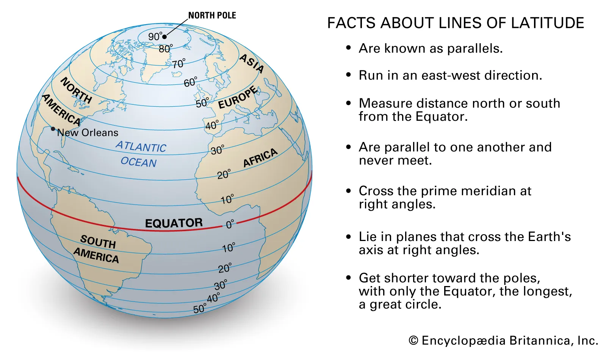
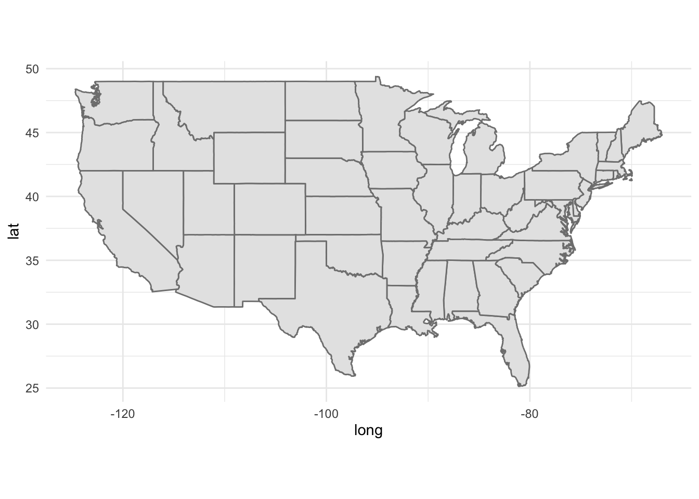

As has been stated a few times before, the Mid-Quarter Project this quarter must be submitted in groups. To ensure you have ample time to work on a project as a group, I am asking that you finalize your group members by no later than 11:59 pm on Tuesday July 1, 2025. A corresponding Gradescope assignment has been posted as well.
Welcome to the PSTAT 100 mid-quarter project! Please keep in mind that projects will be (intentionally) a bit open-ended. This is because most “real-world” data science projects - whether they be in industry or in academia - are also open-ended. Instead of having a set series of questions that can be answered with only one or two methods, project-type questions can often be answered in many different ways, using a variety different techniques.
Some things to keep in mind:
Don’t try to answer the report questions as a list. Though this report will ask you to answer a series of questions (and you should do your best to answer all of the questions asked of you!), you shouldn’t just list out the answers. Rather, write full sentences, and always justify your answers with references to plots or outputs of code.
Do NOT include code in your report outside of the appendix. This may seem counterintuitive at first glance, but this is actually a very common practice in report-writing: you should relegate all of your code to an appendix, opting to include only the results in the main body of your report. (Remember that you can always leverage the echo = F option in your code chunks!)
It’s okay to Google (as long as you’re honest)! No matter how experienced a data scientist may be, there inevitably comes a time when they will encounter something they don’t know how to do. As such, Google is a data scientist’s best friend! The best way to learn how to do things is to try and figure them out. (Of course, we are always happy to help during Office Hours as well.) All I ask is that, in the Works Cited/References portion of your lab, you please make an indication that you did use Google for something.
Describe and interpret ALL graphs and tables. In general, you should never simply generate a graph and/or table and “leave it alone”- all of your graphs, tables, etc. should have some sort of verbal interpretation and/or discussion in your report. For example, what does your graph tell you? How is it that your graph conveys the information that it does?
Ensure your plots are presentation-quality. This means:
You should clearly label axes, and ensure your plot and legends have appropriate titles
You should carefully consider which (if any) color scales to use.
Background: Cartography
As a part of this project, you will be asked with generating a handful of maps. In the cartographic1 world, objects are typically identified by a pair of points called a coordinate. Geographical coordinates consist of a latitude and longitude value, which can be thought of like x- and y-coordinates in a Cartesian coordinate system, respectively.

Depiction of Latitude and Longitude; source: https://cdn.britannica.com/07/64907-050-7ACA69C8/Facts-parallels-Lines-of-Latitude-angles-direction.jpg
We can generate maps in ggplot2 relatively easily; here is some skeleton code you can use to generate maps:
library(tidyverse)states <-map_data("state")ggplot() +geom_polygon(data = states,aes(x = long, y = lat, group = group),fill ="grey90",colour ="grey50") +coord_quickmap() +theme_minimal()

Introduction to the Data
Many of you have likely heard of the United States Census, in which the entirety of the US population is surveyed once every ten years. What you may not have been aware of is the fact that the Census is organized and conducted by a particular governmental agency, the United States Census Bureau, which serves as the government’s primary provider of public-facing data relating to economy and demography. If you’d like to read more about the Census Bureau, I encourage you to consult this handy handout.
Though the “famous” (decennial) census took place back in 2020 and will not be taking place again until 2030, the Census Bureau does still collect regular survey information relating to various economic factors. Of interest to us in this project is data pertaining to household incomes and poverty rates.
The data is spread across two .csv files, all located in the data/ subfolder, differing in their observational units:
hhpub24.csv: observational units are households
ffpub24.csv: observational units are families
We have also provided a file called fips_abbrev.csv (sourced from this link), containing verbose translations of US states’ FIPS (Federal Information Processing Standards) Codes.
Important
You should read through the data dictionary fully, and Google any terms you do not understand or recognize.
Generate a map that displays the proportion of single households (i.e. households consisting of only one individual) within each state that fall below the above-established poverty line.
Project Questions/Tasks
Part I: Household Level
In the first part of the project, we explore various factor at the household level. This means you should only need to use the hhpub24.csv file (and possible the fips_abbrev.csv file as well).
Begin your report with a short paragraph describing what a Core Based Statistical Area (CBSA) is. (The intent is for you to Google - just remember to cite your sources!) Focus on how CBSA codes can be used to identify geographic regions.
Pick three different levels of household incomes. For each level, generate a map that displays the number of households in each state that fall into the selected income level. Comment on any similarities and/or differences between the plots; also comment on how the overall populations of each state might explain any patterns you are seeing.
Generate a map that displays the proportion of households within each state that fall below above-established poverty lines. This means households of any size, that fall below the corresponding poverty line; that is, you’ll need to do some aggregations/calculations. Note: the income brackets in the dataset do not correspond perfectly with the above-mentioned guidelines for poverty. It is up to you to decide how you want to address this, however make sure you clearly state how you decided to address this issue.
Display the distribution of different housing types (houses/apartments, mobile homes, student dormitories, etc.) within the Los Angeles-Long Beach-Anaheim and the New York-Newark-Jersey City areas. Comment on any similarities and/or differences. (Hint: How can CBSAs be used to extract information from the relevant geographical regions?)
Important: The categories on your plots should be descriptively labeled. For instance, you shouldn’t have a bar whose label is just “1” - the labels for the categories should be verbose descriptions like “houses/apartments”, “mobile homes”, etc. To achieve this, consider creating a data frame which converts the id values (1, 2, 3, 4) to their descriptive labels (“houses/apartments”, etc.), and then joining this with your main dataframe.
Compare and contrast the proportion of single individuals living in houses and/or apartments that fall below the poverty line in the Los Angeles-Long Beach-Anaheim and the New York-Newark-Jersey City areas. Be sure to describe how you calculated these percentages, and propose a handful of explanations for any differences/similarities between them.
Are there any missing values in the dataset? Were any values imputed, and, if so, what proportion of values were imputed?
Part II: Family Level
In the second part of this project, we explore the data at the family level. Of particular interest to us are the medical-related expenditures
Among same-sex couples, what is the distribution of families living below and/or above the poverty line? For this problem, use the poverty guidlines established in the FAMLIS variable and not the HHS guidelines from above.
Generate a plot that displays differences in the amount different family types (opposite-sex, same-sex, male single, and female single) paid in medical premiums, and comment on any differences/similarities.
Important: Again, the categories on your plots should be descriptively labeled - don’t use 1, 2, 3, 4, and instead use labels like "opposite-sex","same-sex", etc.
When it comes to the total amount each family paid in premiums, some values have been imputed. What proportion of values were imputed? What is the distribution of imputation methods? One of the imputation methods is listed as “hotdeck imputation”. Using Google, provide a verbal description of how this imputation method words.
Grading Information
Your final report will be graded out of 15 points, with a maximum of 5 points across three categories. The specific rubric that will be used to grade your reports is:
Excellent
Great
Acceptable
Somewhat Lacking
Needs Improvement
Missing
Formatting: Report is free of major typos; all plots and figures are rendered, and no code chunks / error messages are present.
5 pts
4 pts
3 pts
2 pts
1pts
0 pts
Content: Report reads narratively (as opposed to a bulleted list), with all major tasks completed.
5 pts
4 pts
3 pts
2 pts
1pts
0 pts
Figures: All figures have clearly and descriptively labeled axes and titles; appropriate color scales and schemes have been utilizes, and all figures are interpreted.
5 pts
4 pts
3 pts
2 pts
1pts
0 pts
For instance, a report that receives an “Excellent” in Formatting, “Great” in Content, and “Acceptable” in Figures will receive a final score of 11 (i.e. 5 + 4 + 3).
Important Disclaimer
If we notice a major discrepancy between different team members work / contributions to the final report, we reserve the right to assign different grades to different team members.